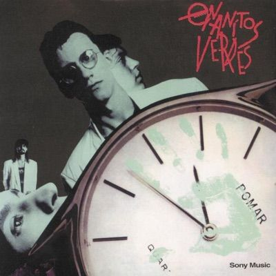

| Enanitos
Verdes es una banda de rock en español originaria de Mendoza,
Argentina, formada en 1979. Sus miembros fundadores fueron Marciano
Cantero (voz y bajo), Felipe Staiti (guitarra) y Daniel Piccolo
(batería). A lo largo de los años, han sido una de las bandas más
influyentes del rock latino, logrando fama en toda Latinoamérica y
Estados Unidos. En sus inicios, tocaron en pequeños bares de Mendoza hasta que en 1984 lanzaron su primer álbum, Los Enanitos Verdes. Sin embargo, fue con Contrarreloj (1986), producido por Charly García, que alcanzaron el éxito internacional con canciones como "La muralla verde". Durante los años 80 y 90, la banda se consolidó con álbumes como Habitaciones extrañas (1987) y Igual que ayer (1992), creando algunos de los himnos más recordados del rock en español. El sonido de Enanitos Verdes combina rock, pop y baladas, con letras sobre amor, desamor, experiencias de vida y problemas sociales. Han compartido escenario con grandes bandas y se han mantenido activos con giras y lanzamientos hasta la actualidad. En 2022, la banda sufrió una gran pérdida con la muerte de Marciano Cantero, su vocalista y líder. A pesar de ello, su legado sigue vivo y su música continúa siendo escuchada por nuevas generaciones. |
|  |